노트
어휘: 노트에 전자기학을 설명하는 데 사용되는 다음 어휘를 기록하세요. 학습 활동을 완료하면서 각 어휘에 대한 정의와 핵심 용어를 작성하세요.
- 전자기(Electromagnetism)
- 자석(Magnets)
- 북극(North pole)
- 남극(South pole)
- 반발(Repel)
- 인력(Attract)
- 외르스테드의 발견(Oersted's discovery)
- 전류(Current)
- 자기장(Magnetic field)
- 도선(Wire)
- 오른손 법칙 #1(Right hand rule #1)
- 오른손 법칙 #2(Right hand rule #2)
- 오른손 법칙 #3(Right hand rule #3)
- 코일(Coil)
- 모터 원리(Motor principle)
- 외부 자기장(External field)
- 자기력(Magnetic force)
자석
자석에는 유용한 성질이 많습니다. 화살표를 눌러 영구 자석에 대해 더 알아보세요.
모든 영구 자석에는 두 개의 극이 있습니다. 자석을 나침반으로 사용할 경우, 지구의 지리적 북극 쪽을 가리키는 극을 북극(N극)이라고 합니다. 반대로, 다른 극은 남극(S극)이라고 합니다.
생각해보기
자석이 왜 다른 물체를 끌어당기는지 생각해 본 적이 있나요? 자석은 특정 종류의 물질만 끌어당길까요? 자석이 어떤 종류의 물질과 상호작용하는지 생각해 보세요:
철, 니켈, 그리고 일부 희토류 금속을 포함하는 물질입니다. 모든 금속이 자석과 상호작용하는 것은 아닙니다.
가정, 학교, 또는 직장의 많은 물건에는 철과 니켈 같은 금속이 포함되어 있습니다. 사실 여러분은 오늘 아침 시리얼에서 철분을 섭취했을 수도 있습니다. 일부 시리얼은 다른 시리얼보다 원소 상태의 철(Fe) 함량이 더 높을 수 있습니다.
철 함량이 높은 아침 시리얼(일일 권장 섭취량의 100%를 포함할 수 있음)을 물과 함께 봉지에 넣고 으깨면, 철분 일부를 추출할 수 있을 것입니다.
탐구해보기!
다음은 철분 추출을 보여주는 동영상입니다. 자세히 관찰하면 작은 검은 철 조각들을 볼 수 있습니다!
직접 해보기!
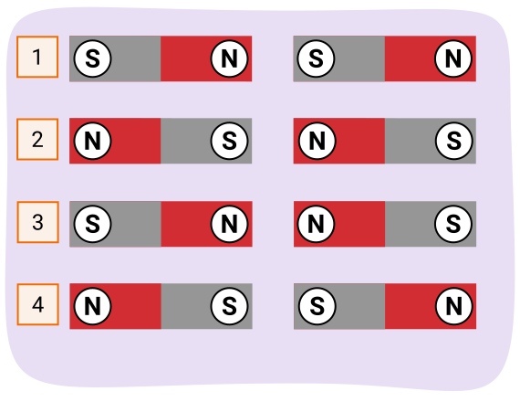
두 개의 자석이 상호작용할 때, 인력(attraction) 또는 반발력(repulsion)의 힘을 경험합니다. 자석에 대한 지식을 바탕으로, 옆 그림의 각 시나리오 번호를 드롭다운 메뉴의 힘 유형과 짝지으세요. 제출을 눌러 이해도를 확인하세요.

자기극의 법칙
다음 그림을 살펴보면, 두 자석을 가까이 가져왔을 때 어떤 일이 일어나는지 알 수 있습니다.
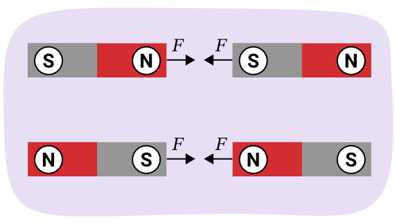
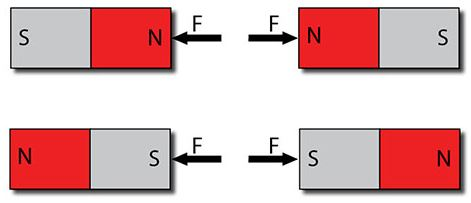
자기극의 법칙(Law of magnetic poles)
반대 자기극은 서로 끌어당깁니다. 같은 자기극은 서로 밀어냅니다.
자기장
자기극이 실제로 접촉하지 않고도 서로를 끌어당기거나 밀어낼 수 있다는 것을 알아차렸을 것입니다. 이는 자기력이 접촉력이 아닌 원거리 작용력(action-at-a-distance force)임을 의미합니다. 자석이 다른 자석을 접촉하지 않고 어떻게 힘을 가할 수 있는지 궁금할 수 있습니다. 각 막대 자석을 둘러싸고 있는 자기장 때문에 가능합니다. (각 막대 자석은 주위에 자기장을 가지고 있습니다.) 이 자기장은 다른 자석이 자기장 내에 놓일 때 힘을 가할 수 있습니다. 이러한 자기장을 감지하기 위해 철 가루(작은 철 조각), 나침반 또는 자기 센서를 사용할 수 있습니다.
탐구해보기!
다음 동영상에서 철 가루가 막대 자석 주위에 정렬되어, N극에서 S극으로 뻗어나가는 자기력선을 보여주는 것을 확인할 수 있습니다.
나침반
이 학습 활동에서는 나침반 바늘을 자기장 감지기로 사용합니다. 다음 동영상에서 나침반 바늘은 항상 자기장의 방향으로 회전하여 자기장의 존재를 나타냅니다. 막대 자석 주위의 자기장은 옆 그림과 같이 선과 화살촉으로 표현할 수 있습니다.
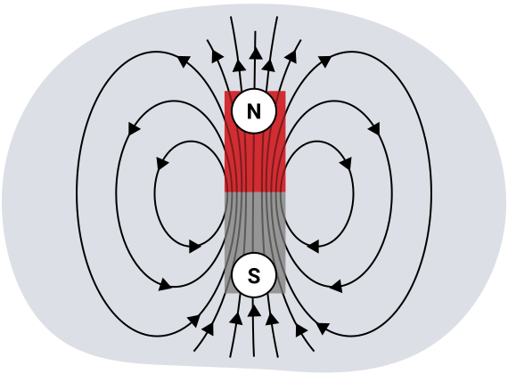
탐구해보기!
다음 동영상에서 나침반 바늘이 자석 주위를 이동하면서 자기장의 존재를 보여줍니다.
자기장
자기력선에는 세 가지 특성이 있습니다:
노트
노트에서 자기장 연습 문제를 풀어보겠습니다. 다음 그림을 복사하고, 각 막대 자석 세트 주위의 자기력선이 어떻게 될지 생각하여 그리세요. 두 문제 모두 자기력선의 방향을 나타내는 화살표를 포함하세요.
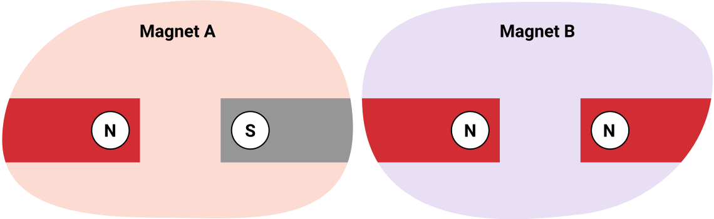
지구의 자기장
지구는 주위에 자기장을 가지고 있습니다.
다음 이미지에서 화살표의 방향을 살펴보세요. 화살표는 지구의 지리적 남극에서 나와 지리적 북극을 향합니다. 방금 자기력선이 북극에서 남극으로 향한다고 배웠기 때문에 혼란스러울 수 있습니다. 그러나 이 선들은 지구가 중심에 큰 막대 자석이 있는 것처럼 작용하며, 자기 북극이 아래(지리적 남극)에 있고 자기 남극이 위(지리적 북극)에 있다는 것을 나타냅니다.
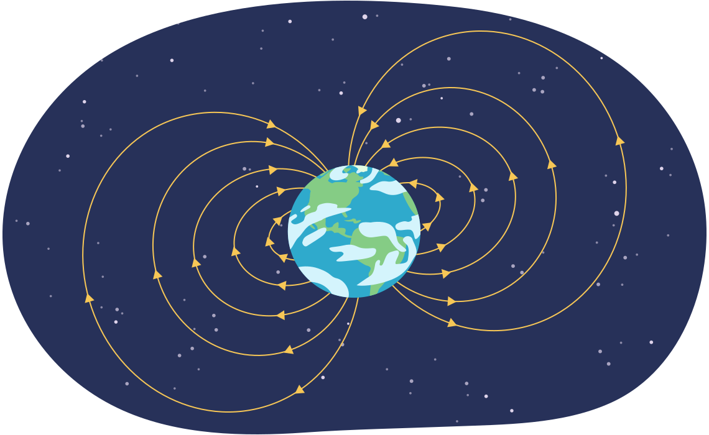
노트
노트에서 자기력선의 방향에 관한 문제를 풀어보겠습니다. 다음 자석 그림을 살펴보고, 동그라미 표시된 물음표 위치에 나침반을 놓으면 어느 방향을 가리킬지 결정해 보세요. 나침반은 항상 자석의 북극에서 멀어지고 남극을 향합니다. 각 나침반의 예시 답안과 비교하여 이해도를 확인하세요.
1. 다음 그림과 같이 나침반을 놓으면 각각 어느 방향을 가리킬까요?
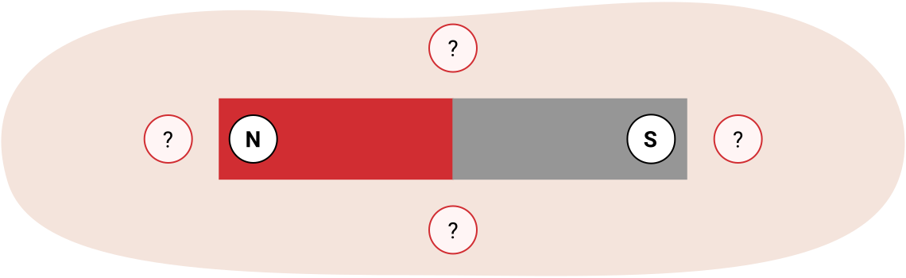
2. 다음 그림과 같이 말굽 자석에 나침반을 놓으면 어느 방향을 가리킬까요?
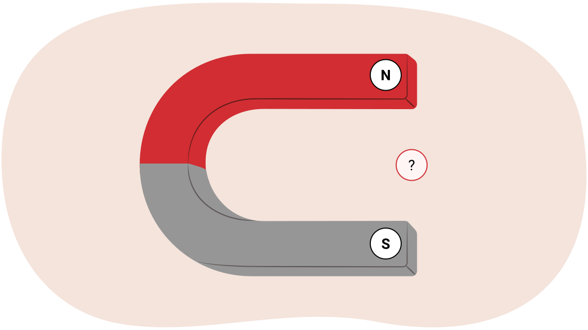
남극을 가리킬 것입니다. 나침반의 북극은 자석의 남극에 끌릴 것입니다.
더 알아보기
원하는 검색 엔진을 사용하여 시간에 따른 자북의 위치를 조사하세요. 지구의 자기장이 뒤집혔거나 뒤집힐 수 있다는 증거를 검토하세요. 지구의 변화하는 자기장에 대해 무엇을 발견했나요?
외르스테드의 발견
1819년, 덴마크의 물리학자 한스 외르스테드(Hans Oersted)는 전류가 길고 곧은 도체를 통과할 때, 근처에 놓인 나침반 바늘이 움직이는 것을 발견했습니다.
전류가 없을 때 나침반은 지구의 북극을 가리킵니다. 전류가 있을 때 나침반의 방향이 바뀌는데, 이는 도체 주위에 자기장이 생성되었음을 의미합니다. 외르스테드는 전자기의 기본 원리를 발견한 것입니다.
전자기의 원리
전류가 도체를 통과할 때마다, 다음 그림과 같이 도체 주위 영역에 자기장이 생성됩니다.
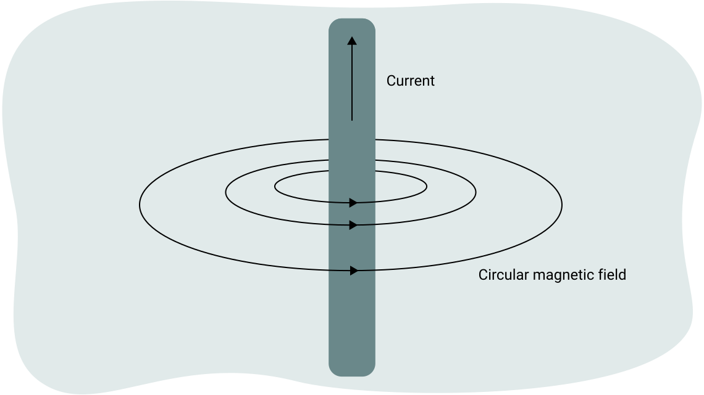
길고 곧은 도체 주위의 자기력선은 도체를 중심으로 원형입니다. 도체로부터의 거리가 증가하면, 자기장은 약해지고 자기력선의 간격이 넓어집니다.
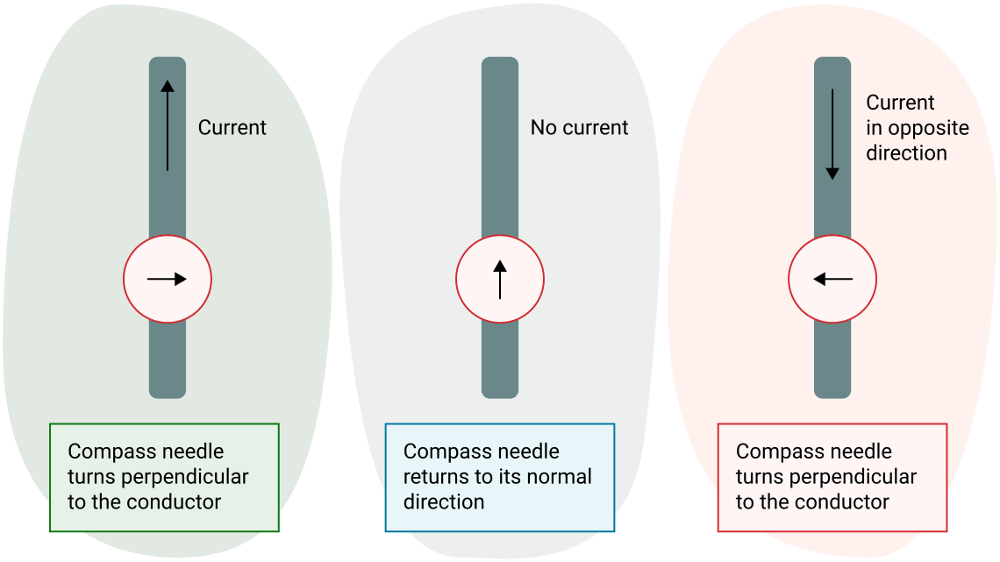
자기력선이 원형이므로, 이 유형의 자기장에는 극이 없습니다. 이전 그림에서 보듯이 이 자기력선들은 모두 도체 외부에 있으므로 시작점이나 끝점이 없습니다.
연구 결과, 과학자들은 전류 주위의 자기장을 설명하는 규칙을 개발했습니다. 이 규칙들은 관련된 방향을 물리적으로 표현하기 위해 사람의 오른손을 사용합니다.
오른손 법칙 #1: 도선 주위의 자기장
첫 번째 오른손 법칙은 도선 주위의 자기장을 설명합니다. 관습적 전류(conventional current)의 방향이 주어지면, 이 오른손 법칙으로 자기장의 방향을 나타낼 수 있습니다.
이 그림에서 보듯이, 오른손의 엄지손가락을 전류(I)의 방향으로 가리키세요. 그런 다음 손가락을 도선 주위로 감으세요. 손가락이 가리키는 방향이 자기장 B의 방향을 나타냅니다. 도선 주위의 자기장은 원형을 형성합니다.
관습적 전류를 고려할 때 오른손을 사용하는 것이 중요합니다. 왼손을 사용하면 정답과 반대 방향의 답을 얻게 됩니다.
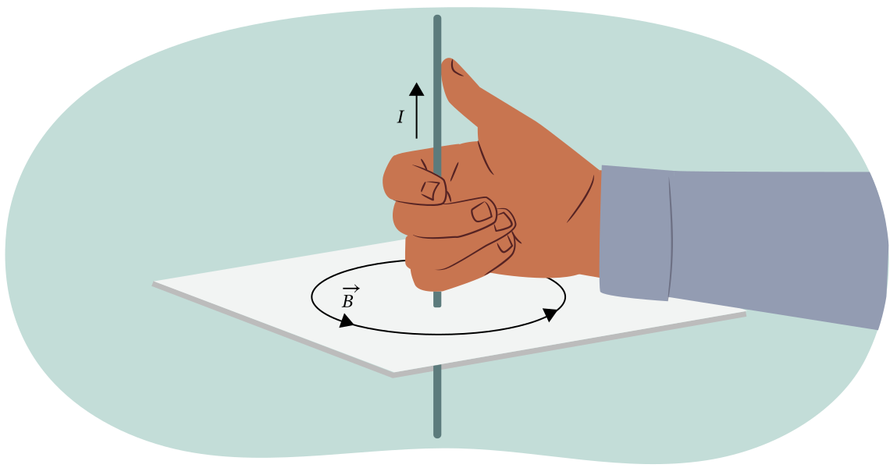
도체를 나타내는 점이나 X를 놓고 도체 주위에 원을 그려 자기장을 나타내면 이 그림을 종이 위에 평면적으로 가장 쉽게 만들 수 있습니다. 도체를 나타내는 원에 X를 놓으면, 전류가 아래로, 즉 "페이지 안쪽으로" 향한다는 뜻입니다. 도체를 나타내는 원에 점( • )을 놓으면, 전류가 위로, 즉 "페이지 바깥으로" 향한다는 뜻입니다. 이 경우, X에 대해서는 엄지가 페이지 안쪽을, 점에 대해서는 엄지가 페이지 바깥을 가리켜야 합니다. 자기력선은 여전히 도체 주위에 원을 형성하지만, 다음 그림에서 보듯이 반대 방향으로 향합니다.
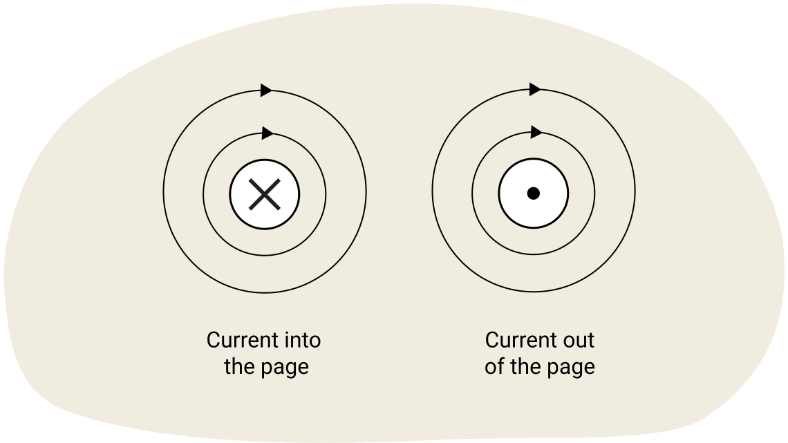
탐구해보기!
다음 동영상은 곧은 도선을 통과하는 전류가 주위에 원형 자기장을 생성하는 방법을 보여줍니다.
노트
1. 다음 그림은 도체와 도선을 나타내며, 화살표와 X로 전류의 방향이 표시되어 있습니다. 노트에 복사하고 각각 주위에 자기력선을 그리세요. (오른손을 사용하세요). 왼손을 사용하면 잘못된 답을 얻게 됩니다.
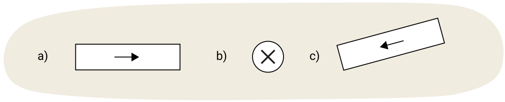
각 부분의 풀이를 선택하여 이해도를 확인하세요.
a) a에서 자기장은 어느 방향을 가리킬까요?
엄지가 오른쪽을 가리킵니다. 손가락을 감으면, 도선 뒤쪽에서는 위를, 도선 앞쪽에서는 아래를 가리킵니다. 다음 그림과 같습니다.
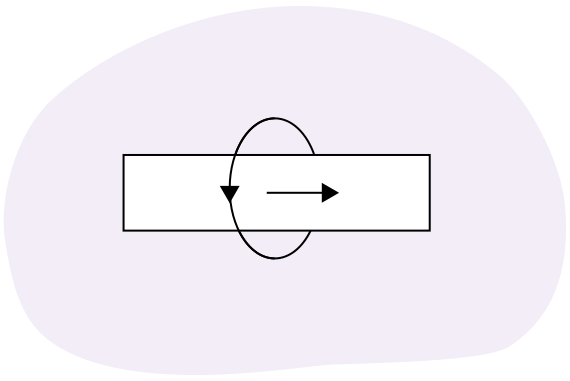
b) b에서 자기장은 어느 방향을 가리킬까요?
엄지가 페이지 안쪽을 가리킵니다. 손가락을 감으면, 왼쪽에서는 위를, 오른쪽에서는 아래를 가리킵니다. 다음 그림과 같습니다.
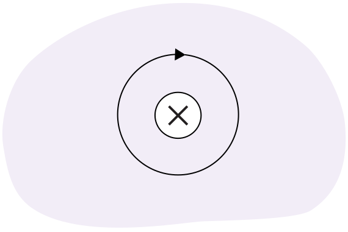
c) c에서 자기장은 어느 방향을 가리킬까요?
엄지가 아래쪽과 왼쪽을 가리키므로, 손가락은 앞쪽에서 위를, 뒤쪽에서 아래를 가리킵니다. 다음 그림과 같습니다.
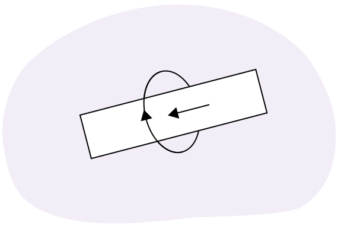
오른손 법칙 #1: 전류 방향 찾기
이제 오른손 법칙을 사용하여 역으로 전류의 방향을 찾아보세요. 자기장의 방향이 주어지므로, 손가락을 어떻게 감아야 하는지 알 수 있습니다. 때로는 펜이나 연필 주위에 손가락을 감아 도선인 것처럼 가장하면 도움이 됩니다. 엄지가 가리키는 방향이 전류의 방향입니다. 화살표를 사용하여 전류의 방향을 나타내세요. (오른손을 사용하세요). 왼손을 사용하면 잘못된 답을 얻게 됩니다.
다음으로 넘어가기 전에 직선 도체에 대한 오른손 법칙 사용법을 이해했는지 확인하세요. 학습 활동의 다음 부분에서 두 가지 오른손 법칙을 더 배우게 됩니다.
탐구해보기!
다음 동영상은 오른손 법칙을 사용하여 전류의 방향을 찾는 방법을 보여줍니다.
노트
1. 다음 문제의 그림을 노트에 복사하세요. 전류의 방향을 나타내는 화살표를 그리세요. 예시 답안과 비교하여 이해도를 확인하세요. 힌트: 오른손을 사용하세요. 왼손을 사용하면 잘못된 답을 얻게 됩니다.
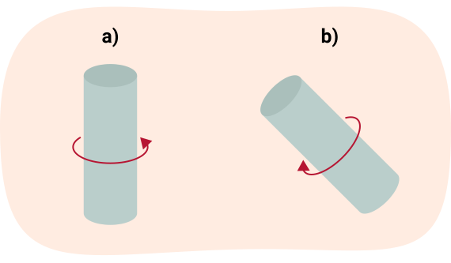
a) a에서 화살표는 어느 방향을 가리킬까요?
화살표는 위를 가리킵니다. 위에서 보면 손가락이 반시계 방향으로 감깁니다. 위에서 보았을 때 손가락을 반시계 방향으로 감으려면 엄지가 위를 가리켜야 하며, 이것이 전류의 방향을 나타냅니다.
b) b에서 화살표는 어느 방향을 가리킬까요?
화살표는 화살표를 따라 아래를 가리킵니다. 위에서 보면 손가락이 시계 방향으로 감깁니다. 위에서 보았을 때 손가락을 시계 방향으로 감으려면 엄지가 아래를 가리켜야 하며, 이것이 전류의 방향을 나타냅니다.
코일 주위의 자기장
도체 주위의 원형 자기장은 상당히 약합니다. 이는 그 유용성을 제한합니다. 그러나 도체를 고리 모양으로 구부리면 훨씬 더 강한 자기장을 만들 수 있습니다. 코일의 고리가 충분히 많고 가까이 있으며, 코일이 충분히 길면, 코일 내부의 자기장은 균일하고 단일 도체 근처의 자기장보다 훨씬 더 강할 것입니다.
이는 코일 내부의 자기력선이 직선이고 가까이 있다는 것을 의미합니다. 전류가 흐르는 코일을 왜 전자석이라고도 부르는지 추측할 수 있나요? 코일 근처의 자기장에 대한 다음 그림을 살펴보면, 코일 외부의 자기장이 막대 자석 근처의 자기장과 같다는 것을 쉽게 알 수 있습니다. 코일은 막대 자석처럼 전기를 사용하여 자기장을 생성하기 때문에 전자석이라고 부릅니다.
직선 도선과 마찬가지로, 전류의 방향이 반대가 되면 자기장도 반대 방향이 됩니다. 코일 내부의 자기장 방향을 찾으려면 오른손 법칙을 사용할 수 있습니다.
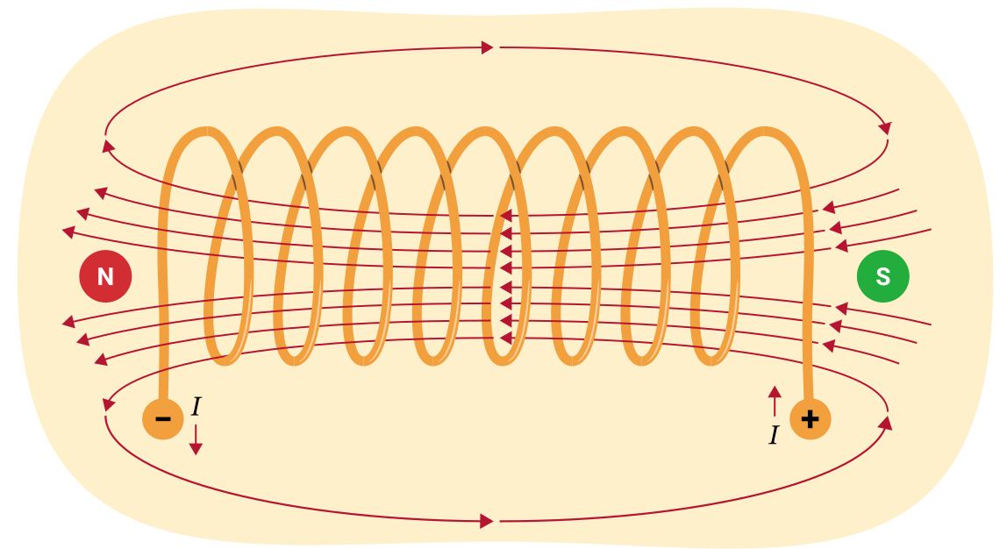
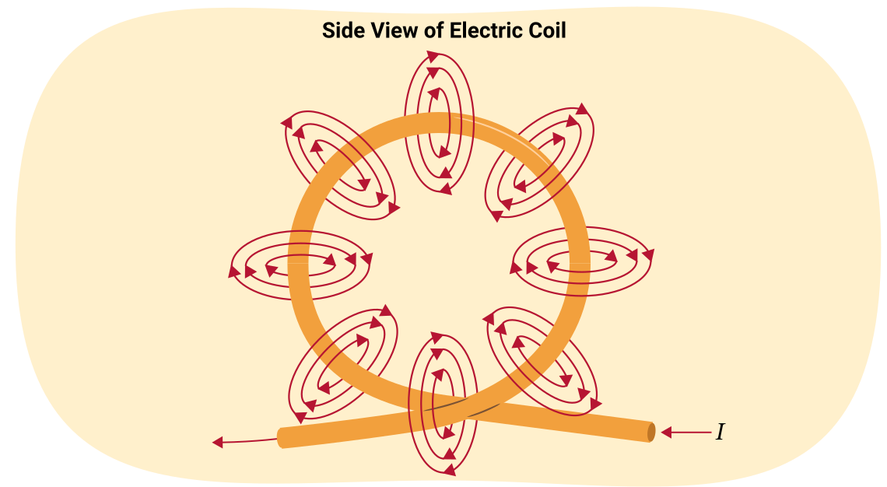
오른손 법칙 #2: 코일 주위의 자기장
두 번째 오른손 법칙은 코일 주위의 자기장을 설명합니다. 코일을 통과하는 관습적 전류의 방향이 주어지고, 이것이 막대 자석과 같은 자기장을 만든다는 것을 알면, 이 오른손 법칙으로 자기장의 방향을 나타낼 수 있습니다.
이 그림에서 보듯이, 관습적 전류의 방향으로 손가락을 코일 주위에 감으세요. 엄지는 이제 전자석의 북극 방향을 가리키며, 자기력선은 같은 쪽에 북극이 있는 막대 자석과 동일합니다.
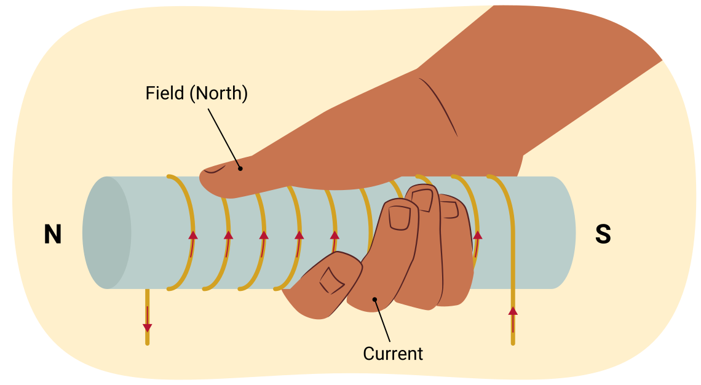
탐구해보기!
다음 동영상은 코일(솔레노이드)에 흐르는 전류가 코일 내부에 균일한 자기장을 만드는 방법을 보여줍니다.
노트
코일에 대한 오른손 법칙을 연습하세요. 배터리의 긴 선은 양극(+)을, 짧은 선은 음극(-)을 나타냅니다. 다음 그림을 노트에 그리세요. 관습적 전류가 이동하는 방향을 나타내는 화살표를 추가하세요. 그런 다음 코일에 대한 오른손 법칙을 사용하여 코일의 어느 쪽이 자석의 북극이고 어느 쪽이 남극인지 결정하세요. 예시 답안과 비교하여 이해도를 확인하세요.
1. 코일에서 전류는 어느 방향으로 흐를까요?

코일 앞면에서 전류는 아래로 흐르므로, 앞면 도선에 아래를 가리키는 화살표를 그려야 합니다. 전류는 배터리의 양극(긴 선)에서 나와 코일 뒷면을 따라 올라가고 앞면을 따라 내려갑니다. 그런 다음 배터리의 음극으로 돌아갑니다.
2. 자기장의 북극은 어디에 있을까요?
코일의 오른쪽입니다. 펜이나 연필에 손가락을 감아보면 도움이 됩니다. 손가락은 펜이나 연필 앞쪽에서 아래를 가리키도록 감깁니다.
그렇게 하면 엄지가 오른쪽을 가리킵니다. 이는 자기장의 북극이 다음 그림과 같이 코일의 오른쪽에 있다는 것을 의미합니다.
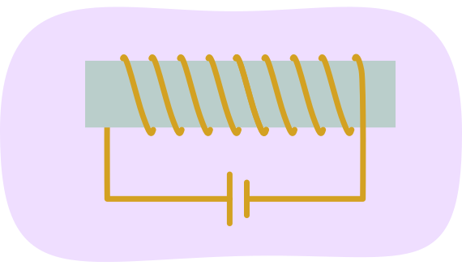
응용: 전자석의 인양력
초기 전자기 연구자들은 코일 내부에 일부 물질(예: 철, 니켈, 코발트)을 넣으면 자기장이 훨씬 더 강해질 수 있다는 것을 알아차렸습니다. 철과 같은 물질을 코일 내부에 넣으면, 전류가 흐르는 동안 일시적으로 자석이 되었다가 전류가 차단되면 자성을 잃었습니다. 연구자들은 또한 전류 및/또는 코일의 고리 수가 증가하면 자기장의 세기도 증가한다는 것을 알아차렸습니다.
탐구해보기!
다음 동영상은 폐차장에서 무거운 금속 조각을 들어올리는 전자석의 작동을 보여줍니다.
전자석을 켜고 끌 수 있다는 사실은 막대 자석에 비해 엄청난 이점을 제공합니다.
간단한 인양용 전자석의 그림이 다음 문제에 제시되어 있습니다.
노트
다음 인양용 전자석 그림을 살펴보세요. 노트에 그리거나 자신만의 방식으로 표현하면 도움이 될 수 있습니다. 다음 질문에 답한 후 예시 답안과 비교하여 이해도를 확인하세요.
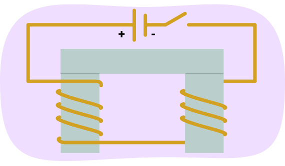
1. 스위치가 닫히면 회로를 통한 전류의 경로를 설명하세요.
전류는 배터리의 양극에서 시작하여 왼쪽 코일로 들어갑니다. 왼쪽 코일의 화살표는 오른쪽을 가리킵니다. 그런 다음 전류는 오른쪽 코일로 이동하며, 오른쪽 코일의 화살표는 왼쪽을 가리킵니다.
2. 전자석의 극을 식별하세요.
코일에 대한 오른손 법칙을 사용하여 전자석의 극을 결정하세요. 왼쪽 코일에서 손가락 끝(전류)이 오른쪽을 가리켜야 하므로, 엄지는 위를 가리킵니다. 이는 왼쪽 코일의 위쪽이 북극임을 의미합니다. 오른쪽 코일에서 손가락(전류)이 왼쪽을 가리켜야 하므로, 엄지는 아래를 가리킵니다. 이는 오른쪽 코일의 아래쪽이 북극임을 의미합니다.
3. 그림을 확인하세요.
그림은 다음과 비슷해야 합니다:
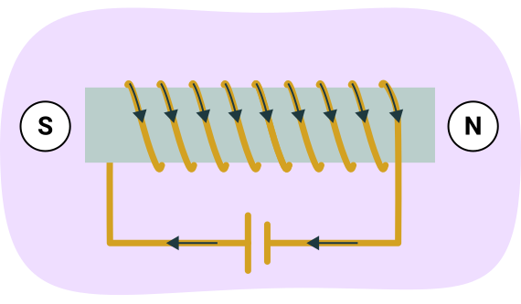
4. 이 자석이 영구 U자형 자석에 비해 어떤 이점이 있나요?
훨씬 더 강하게 만들 수 있습니다. 코일의 전류량을 변화시켜 세기를 조절할 수 있습니다. 전원을 꺼서 끌어당긴 물체를 놓을 수 있습니다.
전자석의 응용
학습 활동의 다음 부분에서 세 번째 오른손 법칙을 배우게 됩니다. 다음으로 넘어가기 전에 처음 두 규칙과 언제 사용하는지 이해했는지 확인하세요.
모터 원리
자기장이 어떻게 끌어당기거나 밀어낼 수 있는지에 대해 이미 배웠습니다. 다음 그림은 그 개념을 복습합니다.
자기력선이 같은 방향이면 자석은 서로 밀어냅니다. 자기력선이 반대 방향이면 자석은 서로 끌어당깁니다.
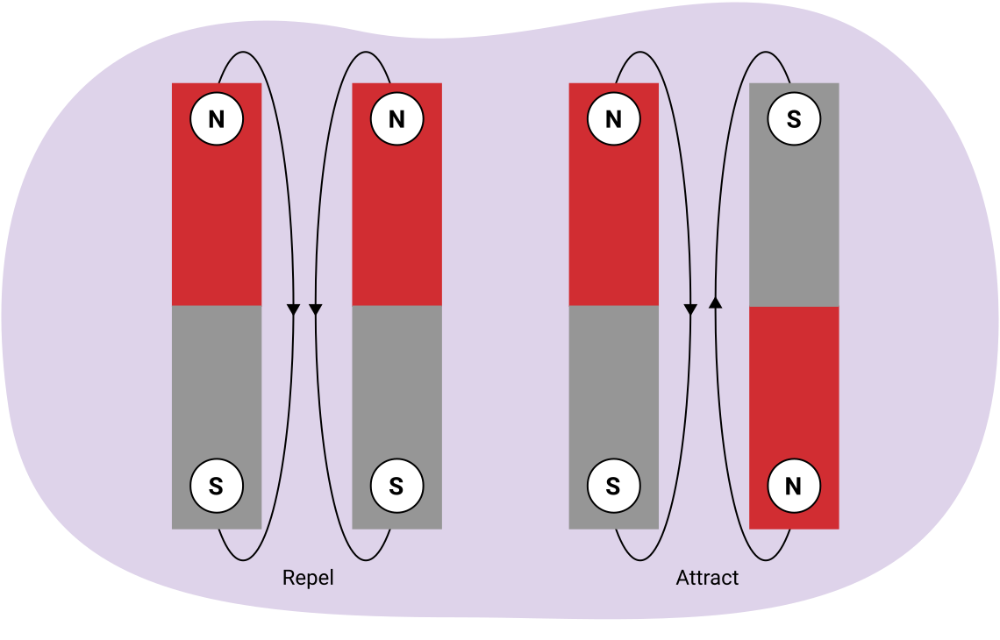
두 개의 길고 곧은 전류가 흐르는 도체를 서로 평행하게 놓으면, 그 주위에 자기장이 형성되므로 서로 밀어내거나 끌어당깁니다. 도선 사이의 자기력선이 같은 방향이면 도선은 밀어냅니다. 자기력선이 반대 방향이면 도선은 끌어당깁니다.
다음 그림에서, 전류가 반대 방향으로 흐르면 도선이 밀어내는 것을 알 수 있습니다. 두 번째 그림은 전류가 같은 방향으로 흐르면 도선이 끌어당기는 것을 보여줍니다.
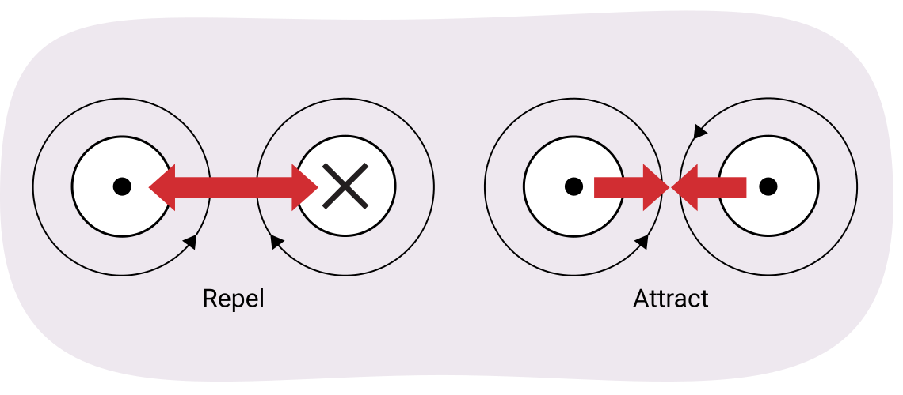
생각해보기
전류가 흐르는 도체를 U자형 막대 자석의 자기장에 넣으면 어떻게 될까요?
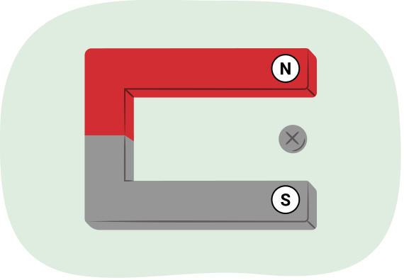
도체와 자석의 자기장을 고려해 보세요.
파란색 선은 말굽 자석의 N극과 S극의 자기장을 나타냅니다.
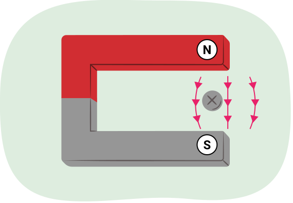
X는 전류가 페이지 안쪽으로 흐르는 직선 도체를 나타냅니다. 도체에 대한 오른손 법칙을 사용하면, 도체의 자기장이 도체 주위에서 시계 방향으로 향한다는 것을 알 수 있습니다.
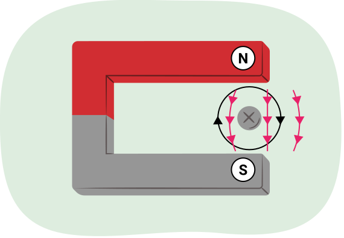
이제 말굽 자석의 자기력선과 도선의 자기력선을 비교해 보세요.
도체의 왼쪽에서 자기력선은 반대이므로, 도체는 끌려서 왼쪽으로 밀립니다.
도체의 오른쪽에서 자기력선은 같은 방향이므로, 도체는 밀려서 왼쪽으로 밀립니다.
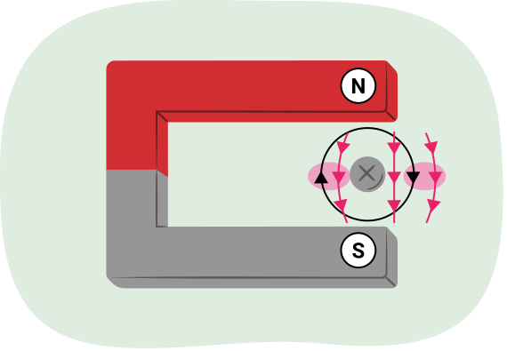
두 힘 모두 왼쪽으로 작용하므로, 도체에 작용하는 알짜힘은 왼쪽입니다. 자기장에 놓인 전류가 흐르는 도체는 힘을 받습니다. 이것이 모터 원리(motor principle)입니다.
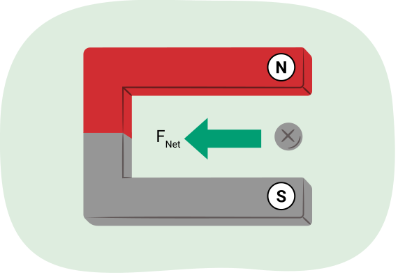
앞서 보여준 것과 유사한 실험 장치를 사용하면, 전류의 방향을 바꾸면 도체가 받는 힘이 반대가 된다는 것을 알 수 있습니다. 마찬가지로, U자형 자석의 외부 자기장을 반대로 하면 도체가 받는 자기력도 반대가 됩니다. 외부 자기장에서 도체에 작용하는 자기력의 방향을 예측하기 위해 다음 오른손 법칙을 사용할 수 있습니다.
이제 말굽 자석의 자기력선과 도선의 자기력선을 비교해 보세요.
도체의 왼쪽에서 자기력선은 반대이므로, 도체는 끌려서 왼쪽으로 밀립니다.
도체의 오른쪽에서 자기력선은 같은 방향이므로, 도체는 밀려서 왼쪽으로 밀립니다.
두 힘 모두 왼쪽으로 작용하므로, 도체에 작용하는 알짜힘은 왼쪽입니다. 자기장에 놓인 전류가 흐르는 도체는 힘을 받습니다. 이것이 모터 원리입니다.
앞서 설명한 것과 유사한 실험 장치를 사용하면, 전류의 방향을 바꾸면 도체가 받는 힘이 반대가 된다는 것을 알 수 있습니다. 마찬가지로, U자형 자석의 외부 자기장을 반대로 하면 도체가 받는 자기력도 반대가 됩니다. 외부 자기장에서 도체에 작용하는 자기력의 방향을 예측하기 위해 다음 오른손 법칙을 사용할 수 있습니다.
오른손 법칙 #3: 모터 원리
세 번째 오른손 법칙은 모터 원리를 설명합니다. 도선의 관습적 전류 방향과 외부 자기장이 주어지면, 이 오른손 법칙으로 전류가 흐르는 도선에 작용하는 힘의 방향을 나타낼 수 있습니다.
이 그림에서 보듯이, 엄지를 관습적 전류의 방향으로 가리키세요. 그런 다음 펴진 손가락을 자기장 방향으로 가리키세요.
손바닥이 가리키는 방향을 고려하세요. 전류가 흐르는 도선에 작용하는 힘은 손바닥과 같은 방향입니다.
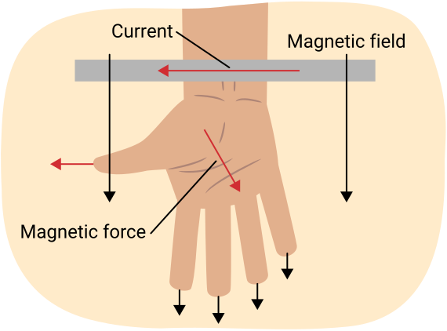
모터 원리에 대한 오른손 법칙을 사용하여 각 설정에서 도선이 어느 방향으로 이동할지 찾아보세요.
다음 단계를 따르세요:
1. 종이에 그림을 그리세요.
2. 외부 자석의 자기력선을 그리세요.
3. 모터 원리에 대한 오른손 법칙을 사용하여 도선에 작용하는 힘의 방향을 찾으세요.
a) 손가락은 외부 자기력의 방향을 가리킵니다.
b) 엄지는 도체의 전류 방향을 가리킵니다.
c) 손바닥은 도체에 작용하는 자기력의 방향을 향합니다.
탐구해보기!
다음 동영상은 모터 원리를 시연하고 설명합니다.
노트
노트를 사용하여 각 그림에 대한 모터 원리 관련 질문의 답을 기록하세요. 예시 답안과 비교하여 이해도를 확인하세요.
1. 다음 그림에서 도선에 작용하는 힘의 방향은 무엇인가요?
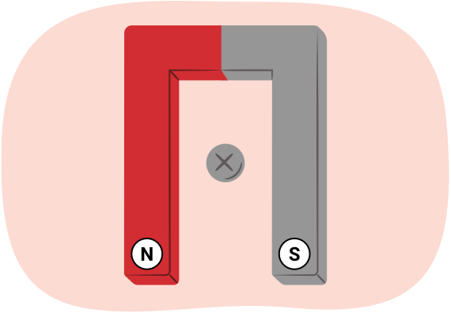
페이지 아래쪽(아래 방향)입니다.
자기력선은 북극에서 남극으로 향하므로 손가락은 왼쪽에서 오른쪽을 가리킵니다. 전류는 페이지 안쪽으로 향하므로 엄지는 페이지 안쪽을 가리킵니다. 이렇게 하면 손바닥이 아래를 향합니다.
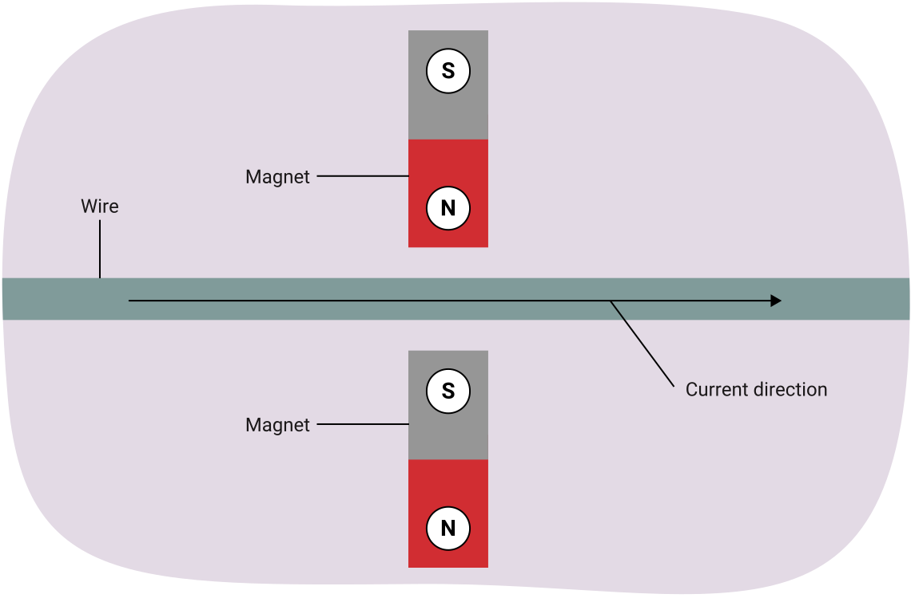
2. 다음 그림에서 도선에 작용하는 힘의 방향은 무엇인가요?
페이지 안쪽입니다.
자기력선은 북극에서 남극으로 향하므로 손가락은 아래를 가리킵니다. 전류는 오른쪽으로 향하므로 엄지는 오른쪽을 가리킵니다. 이렇게 하면 손바닥이 페이지 안쪽을 향합니다.
3. 다음 그림에서 X는 전류가 페이지 안쪽으로 흐르는 직선 도체를 나타냅니다. 배터리의 양극(긴 선)이 어디인지 확인하여 코일을 통한 전류의 방향을 찾을 수 있습니다. 그림을 그리고, 전류의 방향을 나타내는 화살표를 추가하세요.
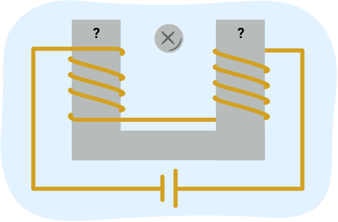
코일에 대한 오른손 법칙을 사용하여 물음표로 표시된 자기장의 극을 찾으세요.
a) 왼쪽 코일:
왼쪽 코일의 위쪽은 남극입니다. 해당 코일에서 전류는 왼쪽으로 흐릅니다. 손가락을 왼쪽으로 감으면 엄지는 아래를 가리키므로, N이 코일의 아래쪽에, S가 위쪽에 있습니다.
b) 오른쪽 코일:
오른쪽 코일의 위쪽은 북극입니다. 해당 코일에서 전류는 오른쪽으로 흐릅니다. 손가락을 오른쪽으로 감으면 엄지는 위를 가리키므로, N이 코일의 위쪽에 있습니다.
c) 모터 원리에 대한 오른손 법칙을 사용하여 자석 중앙의 도선에 작용하는 힘의 방향을 결정하세요.
도선에 작용하는 힘은 페이지 위쪽 방향입니다. 자기장은 북극에서 남극으로 향하므로 손가락은 오른쪽에서 왼쪽을 가리킵니다. 전류는 페이지 안쪽으로 향하므로 엄지는 페이지 안쪽을 가리킵니다. 손바닥이 위를 향하므로, 힘은 페이지 위쪽 방향입니다.
응용: 모터 원리
모터 원리의 많은 다양한 응용이 오늘날 사회에서 사용되고 있습니다. 무빙 코일 스피커와 전동기를 조사할 것입니다.
무빙 코일 스피커
스피커는 다음 그림에서 보듯이 종이 또는 플라스틱 진동판 콘을 앞뒤로 빠르게 움직여 작동합니다.
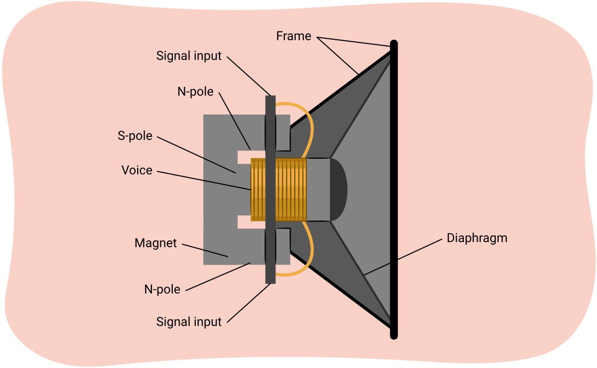
이 빠른 운동을 유발하기 위해 교류(AC)가 사용됩니다. AC는 일정한 간격으로 흐름 방향이 바뀌는 전류입니다. 이를 신호 입력이라고도 합니다. 이 전류가 보이스 코일에 들어가면 전자석으로 변합니다. 보이스 코일이 스피커 뒤쪽의 자석에 끌리면 코일이 진동판을 뒤로 당깁니다. 보이스 코일이 스피커 뒤쪽의 자석에 의해 밀리면 진동판을 앞으로 밀어냅니다.
생성되는 소리의 주파수는 진동판이 앞뒤로 움직이는 속도에 따라 달라지며, 이는 전류 방향이 바뀌는 속도에 따라 달라집니다. 소리의 크기는 진동판의 진동 진폭에 따라 달라집니다. 진폭은 입력 신호에서 흐르는 전류의 크기에 따라 달라집니다.
전동기
다음 그림을 살펴보세요. 전류는 양극에서 시작하여 오른쪽의 정류자(commutator) 부분(A)을 통과하고, 탄소 브러시 1을 통과합니다. 이 전류는 그림과 같이 고리를 반시계 방향으로 돕니다. 전류는 왼쪽의 정류자 다른 반(B)을 통과하고, 왼쪽의 탄소 브러시 2를 통과한 후 음극을 통해 배터리로 돌아가며 고리를 완성합니다.
모터 원리에 대한 오른손 법칙을 사용하면, 코일의 왼쪽과 오른쪽 부분에 작용하는 힘을 결정할 수 있습니다. 코일의 왼쪽 부분은 그림의 아래쪽을 향하는 자기력을 생성합니다. 오른쪽의 도체는 "페이지 안쪽으로" 향하는 전류를 가지고 있습니다. 이는 다음 그림의 위쪽을 향하는 자기력을 생성합니다.
정류자가 반 바퀴를 회전하면, 전류가 B를 통해 들어가고 A를 통해 나가기 시작합니다. 정류자가 없으면, 모터는 한 방향으로 계속 회전하는 대신 앞뒤로 뒤집히기만 할 것입니다.
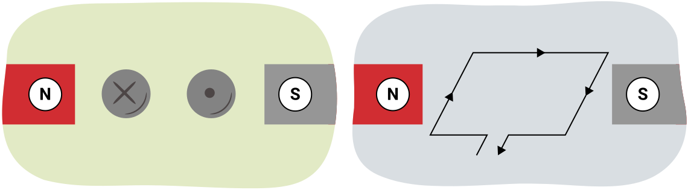
자석: 이 모터는 두 개의 영구 자석을 사용하며, 이전 그림에서는 자석의 극만 표시되어 있습니다.
브러시: 이 탄소 브러시는 정류자에 밀착되어 있지만 단단히 부착되지는 않습니다. 정류자와 코일이 회전하기 시작하면, 브러시는 정류자 표면에서 미끄러지면서 움직이지 않고 전기를 전도합니다.
코일: 이 그림에서는 그림을 단순화하기 위해 코일의 한 고리만 표시되어 있습니다. 일반적으로 코일에는 자기력을 더 강하게 만드는 많은 고리가 있습니다.
정류자: 말 그대로 반으로 잘린 원형 전도성 금속 조각입니다. 이 정류자는 코일과 함께 회전하며 코일에 단단히 부착되어 있습니다.
직접 해보기!
전동기가 회전하는 원리를 더 잘 이해하기 위해, 다음 인터랙티브 요소를 시도해 보세요. 시작 버튼을 눌러 새 탭에서 시뮬레이션을 열어보세요.
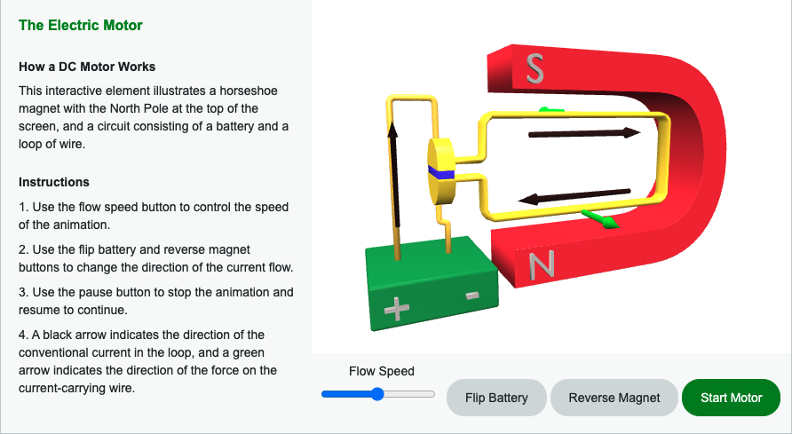
시작 (새 창에서 열림)노트
노트를 사용하여 다음 각 문제를 풀 수 있습니다. 예시 답안과 비교하여 이해도를 확인하세요.
1. 모터 코일의 회전 방향을 반대로 하는 두 가지 방법을 설명하세요. 이유를 설명하세요.
전류의 방향을 반대로 하거나 자석의 극을 반대로 할 수 있습니다. 전류를 반대로 하면 엄지가 방향을 바꾸어 손바닥이 반대 방향을 가리키게 됩니다. 자석의 극을 반대로 하면 손가락의 방향이 바뀌어 손바닥도 반대 방향을 가리키게 됩니다.
노트
연습: 모터
노트에 다음 질문에 답하세요.
1. 다음 각 그림을 살펴보세요. 모터 원리에 대한 오른손 법칙을 사용하여 각 고리의 회전 방향을 예측하세요.
a) 오른손 법칙을 사용하면, 자기장이 고리의 왼쪽을 아래로, 오른쪽을 위로 밀어 고리가 반시계 방향으로 회전합니다.
b) 오른손 법칙을 사용하면, 자기장이 고리의 왼쪽을 위로, 오른쪽을 아래로 밀어 고리가 시계 방향으로 회전합니다.
2. 다음 간단한 DC 모터 그림을 살펴보세요:
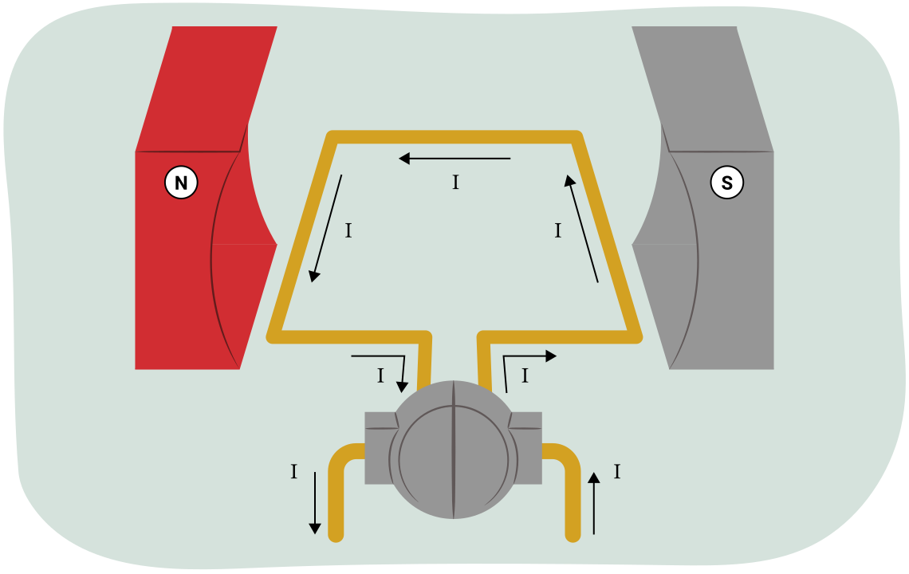
a) 모터가 처음에 어느 방향으로 회전할지 확인하세요.
자기장이 고리의 오른쪽을 아래로, 왼쪽을 위로 밀어 모터가 시계 방향으로 회전합니다.
b) 정류자의 기능을 설명하세요.
정류자는 반으로 나뉜 원형 도체입니다. 고리 내부의 전류 방향을 전환하여 브러시에서 올바른 쪽으로 전류가 흐르도록 합니다.
c) 탄소 브러시의 기능을 설명하세요.
브러시는 정류자에 전류를 전달하는 도체로, 모터의 회전을 멈추게 하지 않으면서 영구적인 연결 없이 전류를 전도합니다. 브러시는 정류자 외부를 따라 미끄러지면서 고리의 위치에 맞는 올바른 방향으로 전류를 보냅니다.
d) 영구 자석의 기능을 설명하세요.
영구 자석은 외부 자기력선을 제공합니다. 모터 원리에 따라, 이 외부 자기장은 고리 모양의 도선에 힘을 가하는 데 필요합니다.

개념 지도 만들기
전자기에 대한 많은 개념을 배웠습니다. 각 개념이 서로 어떻게 관련되는지 더 잘 이해하기 위해, 개념을 그래픽 오거나이저로 정리하면 도움이 될 수 있습니다.
개념 지도를 사용하여 다음 용어들을 서로의 관계에 기반하여 정리할 것입니다.
개념 지도(concept map)는 그래픽 오거나이저의 한 유형입니다. 주요 아이디어나 개념에서 시작하여 하위 주제와 관련 개념 용어로 분기됩니다.
초점을 맞출 주요 아이디어, 주제 또는 쟁점에서 시작하세요; 그런 다음 주요 아이디어나 개념과 관련된 핵심 개념을 결정하세요.
주요 주제와 직접적으로 관련된 핵심 개념을 찾으세요. 이러한 방식으로, 개념 지도는 일부 부분이 다른 주제/개념보다 높은 우선순위를 갖는 계층적 유형의 그래픽 오거나이저입니다. 해당 핵심 개념과 관련된 다른 개념을 찾고 필요에 따라 계속 분기하세요.
개념 지도의 독특한 특징은 개념/용어를 연결 문구와 단어로 연결하는 것입니다. 이것이 개념 지도를 마인드 맵과 구별합니다. 두 개념 사이에 연결이 만들어질 수 있으며, 지도의 다른 영역과 연결될 때 교차 연결이 만들어질 수 있습니다. 전자기와 같은 복잡한 주제를 이해하는 데 있어 개념 연결은 중요합니다.
노트
노트에 다음 용어를 포함한 개념 지도를 만드세요:
- 전자기(Electromagnetism)
- 자석(Magnets)
- 북극(North pole)
- 남극(South pole)
- 반발(Repel)
- 인력(Attract)
- 외르스테드의 발견(Oersted's discovery)
- 전류(Current)
- 자기장(Magnetic field)
- 도선(Wire)
- 오른손 법칙 #1(Right hand rule #1)
- 코일(Coil)
- 오른손 법칙 #2(Right hand rule #2)
- 모터 원리(Motor principle)
- 외부 자기장(External field)
- 자기력(Magnetic force)
- 오른손 법칙 #3(Right hand rule #3)
자기 점검 퀴즈
이해도를 확인하세요!
다음 자기 점검 퀴즈를 완료하여 학습의 현재 위치와 집중해야 할 영역을 파악하세요.
이 퀴즈는 피드백 목적이며, 성적에 포함되지 않습니다. 이 퀴즈에 대한 시도 횟수는 무제한입니다. 충분한 시간을 갖고 최선을 다하며, 제공된 피드백을 반성하세요.
퀴즈를 눌러 이 도구에 접근하세요.